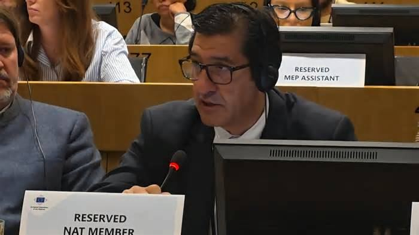

Castilla-La Mancha defiende en Bruselas las prioridades de la región ante el nuevo modelo de la Política Agraria Común: "Hay que hablar del futuro de Europa"

El vicepresidente segundo, José Manuel Caballero, participó en un Foro de Alto Nivel organizado por el Comité Europeo de las Regiones y AgriRegions, en el que también intervinieron representantes de l ...
El vicepresidente segundo, José Manuel Caballero, participó en un Foro de Alto Nivel organizado por el Comité Europeo de las Regiones y AgriRegions, en el que también intervinieron representantes de l ...
Noticia publicada por La Razón. Consulta el artículo original en La Razón para más información.